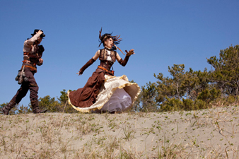

Trai Cartwright
Trai Cartwright is a 20-year entertainment industry veteran recently returned to her native Colorado. During her tenure in Los Angeles, four of Trai’s screenplays were optioned, she produced three independent films and she has consulted on thousands of scripts. She was a studio development executive, spent eight years consulting for HBO, was assistant director of Leonardo DiCaprio’s online ventures, worked at a massively multi-player online role-playing game company, and made ringtones for 20th Century Fox. She currently teaches creative writing and screenwriting across Colorado for UNC, Colorado Film School, private writers groups, conferences, and also edits and coaches writers one-on-one. Trai can be found at www.craftwrite.com.
Matthew Ebel
He calls himself a piano rocker, but he’s really just kind of a goofball. Matthew has been playing the piano since age 5, discovered electronic music at 12, and made this stuff his career in 1999. Since then he’s played at the Grand Ole Opry, been quoted in Rolling Stone, and made a name for himself in new media circles. He’s been able to play piano rock full-time since 2007 and since then he’s never looked back.
People tell him that they’re fans because he writes some funny stuff, some emotionally charged stuff, and tends to experiment with his sound a lot. He’ll take their word for it, but you can find out for yourself by listening to the samples or buying an album. All we know is that he likes to get on stage and have a good time, getting the crowd involved whenever possible.
Tracy Hickman
Tracy Hickman is many times over an International and NYT Best-selling fantasy and science-fiction author with over fifty books in print. He has in excess of thirty years’ experience in the crafting and selling of the written word. He is also a pioneer in electronic- and self-publishing which he teaches in his own online writing workshops and seminars. He specializes in character and story structure as well as the new paradigms of publishing in the ebook age. Rumor has it he is planning to do a Killer Breakfast for us, too!
Thorough and extensive background can be found at trhickman.com.
{kind=link}
Jan Scott-Frazier
We put Jan here with the authors because she has so many amazing talents, we almost needed a category just for her! Jan joins us as AnomalyCon’s MC for 2014!
Jan worked in the anime industry in Japan for 13 years in a number of different positions. Jan was the first foreigner to work in the production department in a Japanese studio – Artland – on RikiOh 2, Locke the Superman (OVA), Shurato (OVA), Bubblegum Crash (OVA) and Tottoi (feature) then trained animation studio staff in China, Thailand and other countries. She founded her own full production company, TAO Corporation Ltd., in Bangkok, Thailand, which did work on Moldiver,Diary of Mikan, Genocyber and SWAT Kats amongst others. She also co-founded GENESIS Digital Publishing Company with Izumi Matsumoto (Kimagure Orange Road) where they created Comic ON, the first digital manga, on CD-ROM in which Jan made her manga debut with her original digital graphic novelTranscendence. Comic ON went on to be the one of the top selling non-game CD-ROM titles in Japan in 1996.
She then worked for Production I.G (Ghost in the Shell, Blood) as the president of Production I.G. USA and as a producer and technical director on the Japanese side. She was technical director of the animation for the Grandstream Saga, Madou Monogatari, and Kyoushin Senki games as well as working on the Panzer Dragoon OVA. As a freelance director, Jan directed episodes of Susie-chan & Marvy (TV) and worked on the development of original TV series projects.
She also consulted on the development of computer assisted (2D) animation production systems and helped transition the anime industry into digital production.
Jan has written textbooks, magazine articles, technical manuals ans screenplays, translated manga (Scryed, Psychic Academy, Here is Greenwood, Pink Sniper) and the movie Dead Leaves. Her work has been published in 8 languages. She has traveled extensively throughout Asia, Canada, the UK and the US teaching animation techniques and has been a guest and panelist at over 200 conventions. She also founded and produced two albums for non-profit Voices For, www.voicesfor.org
Jan can be found on the web at www.janscottfrazier.com
Strange Artifact
Hailing from Tokyo, Japan, Strange Artifact is a steampunk musical unit consisting of vocalist MaRy and bassist/composer 130JET. After forming in 2010, the duo took to the stage wearing steampunk-inspired outfits in an effort to introduce the subculture to Japanese audiences who, though familiar with the style through the works of Hayao Miyazaki and other famous Japanese artists, were unfamiliar with steampunk as a genre.
After performing at the internationally-renown Tokyo Design Festa as well as events hosted by underground subculture promoter Artism, Strange Artifact gained international attention through a crowdfunding campaign to support their debut album, The Antikythera Mechanism. In support of their first release, the band made first journey overseas to perform at the Steampunk World’s Fair in New Jersey.
Since then, Strange Artifact have also gained attention in Japan through their Poorman’s Gold Label, consisting of hand-made steampunk accessories. In addition to gracing the cover of Japan’s biggest English-language weekly Metropolis Magazine, the duo have appeared in the Steampunk Oriental Laboratory series of mooks as well as Artism Magazine.
MaRy and 130JET are both looking forward to their second trip to the US and can’t wait to meet the region’s steampunk enthusiasts, as well as share the stage with all of the talented performers that are appearing at AnomalyCon. See you in Denver!